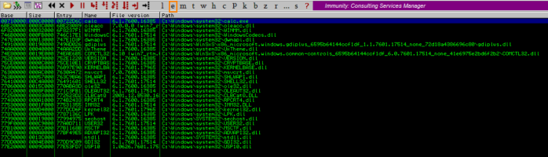

ASLR
Address Space Layout Randomization (ASLR)
When ASLR is activated for an executable(.exe) or library(.dll),
the OS loads it
at different locations in memory
every time(at every reboot)
This makes more difficult for an attacker
to predict memory addresses and causes exploits to fail and crash the
process
Even if an application has ASLR enabled, there could be a
linked DLL(library) in the address space without this protection which
could make the application vulnerable to the ASLR bypass attack.
To
implement correctly ASLR and DEP:
https://msrc-blog.microsoft.com/2010/12/08/on-the-effectiveness-of-dep-and-aslr/
To bypass ASLR+DEP:
•
https://www.corelan.be/index.php/2011/07/03/universal-depaslr-bypass-with-msvcr71-dll-and-mona-py/•
https://www.exploit-db.com/docs/english/17914-bypassing-aslrdep.pdf•
https://www.corelan.be/index.php/2009/09/21/exploit-writing-tutorial-part-6-bypassing-stack-cookies-safeseh-hw-dep-and-aslr/Each module has its own base addressEach module(.exe or .dll) has its own base address. The base
address is the position in memory where the module has been loaded.
If we reboot the system and try to load the same executable again(in
this example calc.exe), we will see that these base addresses will
change.
We can check it with Immunity Debugger in the Modules
Window

{kind=link}